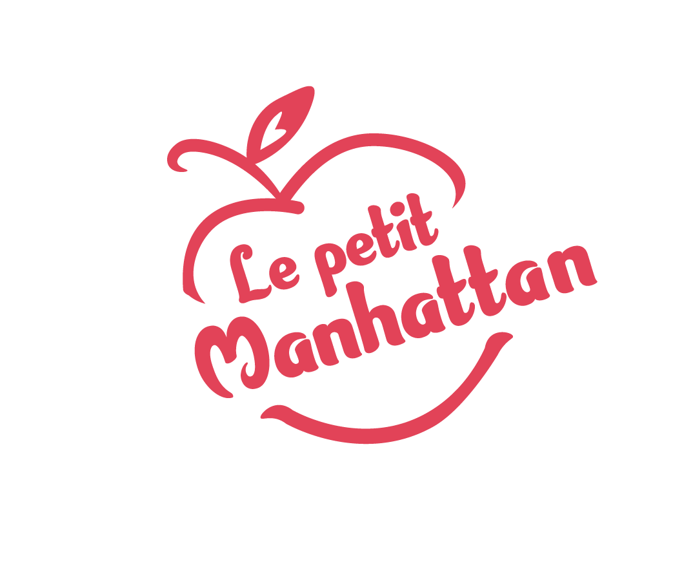
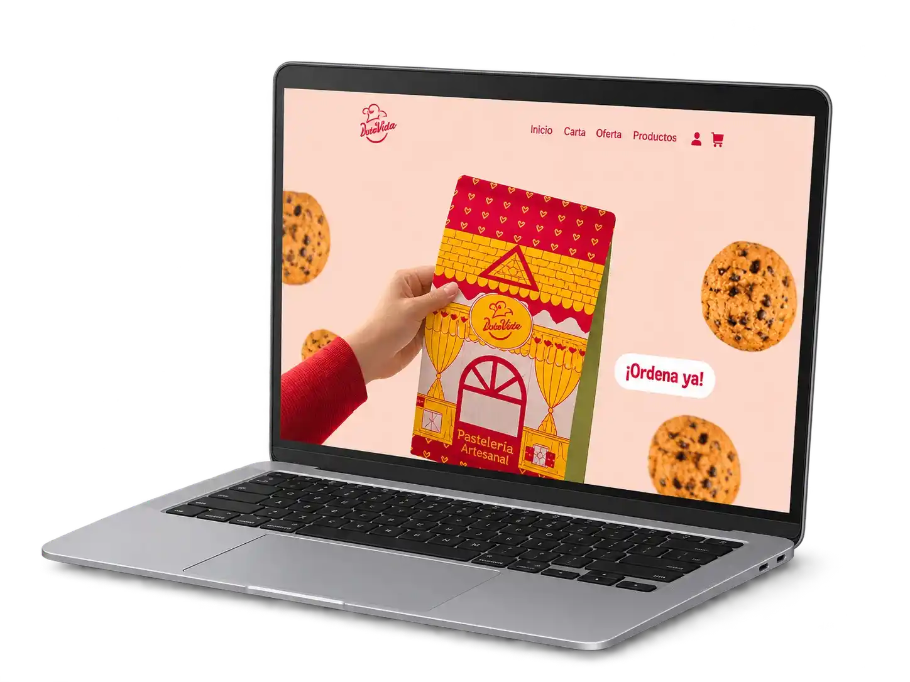
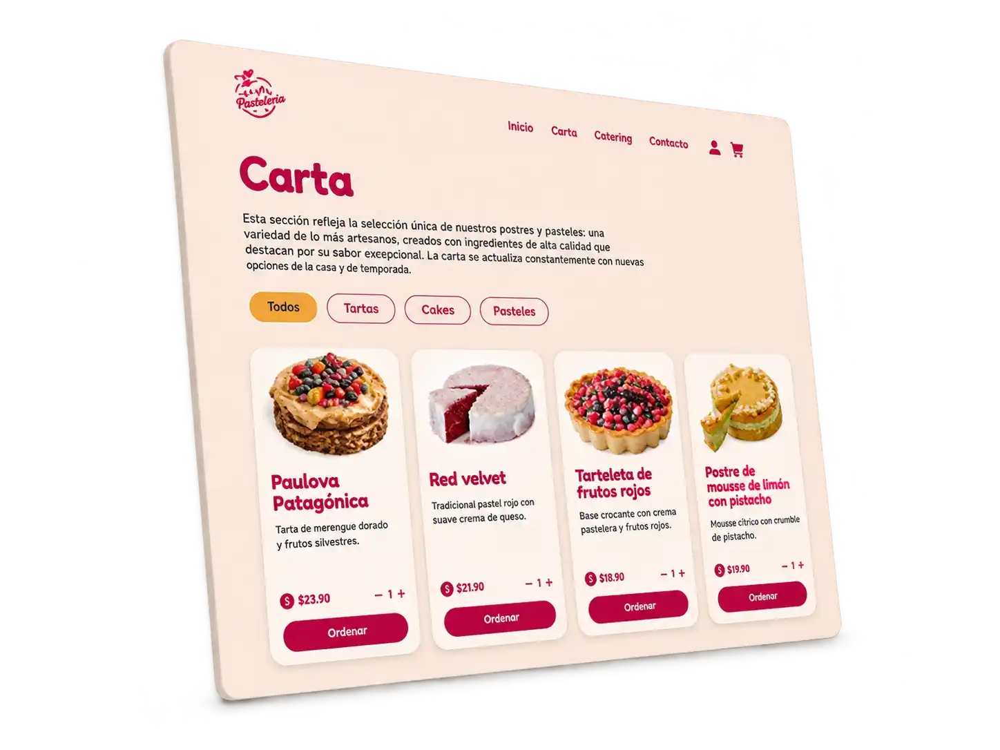
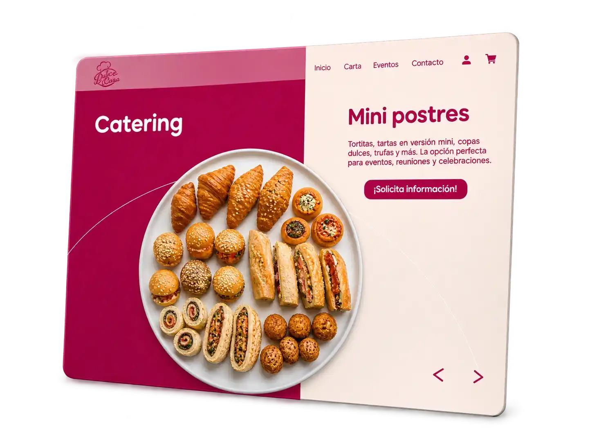

Le petit Manhattan
Proyecto Branding y Desarrollo web
Le Petit Manhattan es una pastelería que fusiona la estética y la gastronomía de Nueva York con la elegancia de la pastelería francesa. Especializados en las sus galletas y el cheesecake Newyorkino. El proyecto fue desarrollado con HTML, CSS y JavaScript, trasladando la identidad de marca a una experiencia responsive y añadiendo funcionalidades que facilitan la navegación y la exploración de productos.
Identidad visual
El logotipo de Le Petit Manhattan se inspira en la Gran Manzana, símbolo emblemático de Nueva York. Sus líneas dinámicas y desenfadadas, junto con el uso de un color vibrante y llamativo, buscan representar la energía, el movimiento y el bullicio característicos de la ciudad.

-
Fucsia#B80943
-
Amarillo#F2B861
-
Blanco#FEFBF4
-
Negro cargado#1D1D1B
Diseño de interfaz
La web se estructura en secciones que permiten descubrir la marca, explorar su catálogo de productos y conocer sus servicios de catering y eventos. Las composiciones visuales, las imágenes de producto y los elementos interactivos buscan crear una experiencia atractiva sin comprometer la usabilidad.

Un catálogo interactivo
La sección Carta organiza los productos mediante tarjetas visuales y filtros por categorías, facilitando una exploración rápida e intuitiva. Los filtros, desarrollados con JavaScript, permiten mostrar los productos según la categoría seleccionada sin necesidad de recargar la página, haciendo que la navegación sea más fluida y dinámica.

Eventos en movimiento
La sección de catering incorpora una animación circular que permite recorrer visualmente las diferentes propuestas para eventos. El movimiento aporta dinamismo a la interfaz, destaca los productos y refuerza el carácter divertido de la marca. Esta interacción combina diseño visual y animación para crear una experiencia más atractiva y participativa.

Maquetación
Le Petit Manhattan se desarrolló siguiendo los principios del diseño responsive, adaptando la distribución de los contenidos, las imágenes y los elementos de navegación a diferentes tamaños de pantalla. Mediante CSS, Flexbox, Grid y media queries, se reorganizaron los componentes para mantener una experiencia visual coherente, intuitiva y funcional tanto en ordenadores como en tablets y dispositivos móviles.